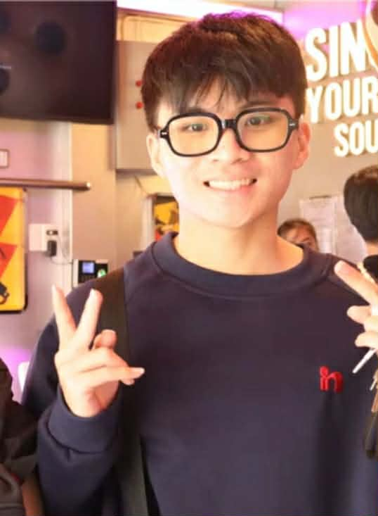

Ho Chi Minh City tranhoangtrong06@gmail.com (+84) 854 598 276

A highly motivated student in Management Information Systems with practical experience in data analysis, business process improvement, and technology research. My academic projects have given me a solid understanding of data analysis and business process improvement. Seeking to apply analytical and research skills in a professional environment, particularly in interdisciplinary fields like AI, to contribute to innovative projects.
Management Information System at University of Economics and Law, VNU-HCM
Aug 2024 - Present
Management Information System (MIS) Analysis: Conducted a comprehensive analysis of Colusa Miliket's MIS, identifying key areas for improvement and proposing data-driven solutions to enhance service delivery and efficiency. The project earned the highest grade of A+.
Internal Communication Solution: A functional prototype named Output Messenger was developed and implemented to improve internal team communication, with the project earning a grade of A.
Technology Research: An in-depth research project on the potential applications and challenges of Quantum Networks was spearheaded, and a detailed report was authored. The report was awarded an A for its thorough analysis.
Artificial Intelligence for Interdisciplinarity Club - member
Nov 2024 - Present
Collaborated with over 40 members to organize the AI in Business Competition Season 2, an event that successfully attracted more than 500 participants across Vietnam. Supported the marketing team by creating promotional materials and editing videos. Provided logistical assistance for key event activities, including seminars and the final round.
Organizing monthly talkshow AI for All. Worked with executives and engineers across multiple fields from companies like PlayAh, ChoTot, Obagi, and more to share their insights on AI applications in business and education.